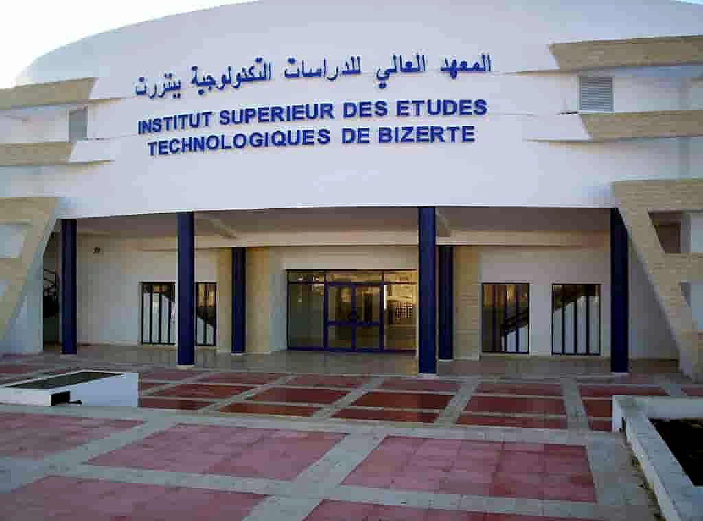
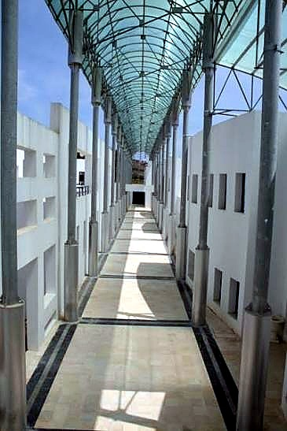

Institut Supérieur des Études Technologiques de Bizerte — ISET Bizerte
ISET بنزرت مؤسسة عمومية ذات صبغة علمية وتكنولوجية، أُحدثت سنة 2005، وتندرج ضمن منظومة الإدارة العامة للدراسات التكنولوجية التابعة لوزارة التعليم العالي والبحث العلمي. تتمثل مهمتها في تكوين طلبة بمهارات تطبيقية وربط التكوين بالحاجيات المهنية والتنمية الجهوية.
| النوع | مؤسسة تعليم عالٍ عمومية |
| الطابع | علمي وتكنولوجي |
| سنة الإحداث | 2005 |
| الموقع | Menzel Abderrahmen, Bizerte |
| الرمز البريدي | 7035 |
هذه الصفحة تقدم صورة عملية عن المجالات المذكورة في الدليل، بينما يبقى العرض الرسمي للسنة الجامعية هو المرجع النهائي للتخصصات المفتوحة.
من أكثر المجالات ارتباطًا بالأنظمة الكهربائية والتحكم والأتمتة. من المسارات التي تظهر في منشورات قسم الهندسة الكهربائية: AII، EI وELNI.
مجال يهتم بتكنولوجيا المعلومات والبرمجيات والأنظمة الرقمية، مع تكوينات تطبيقية مرتبطة بحاجيات سوق الشغل.
مجال يرتبط بالعمليات الصناعية والتحويلية ومتابعة الأنظمة والعمليات التقنية.
تكوينات في التصرف والمجالات الاقتصادية والإدارية، مع تطبيقات مرتبطة بالمؤسسة وسوق الشغل.
بيئة ISET تعتمد على الجانب التطبيقي، وتظهر في منشورات قسم الهندسة الكهربائية أمثلة لمشاريع PFE مرتبطة بالأتمتة، Arduino، الأنظمة الصناعية، القياس والتحكم وغيرها.
الهدف ليس حفظ الدروس فقط، بل بناء مهارات تقنية قابلة للاستعمال في المشاريع.
مشاريع وتداريب يمكن أن تكون مرتبطة بمؤسسات صناعية وتقنية حسب المسار.
السنة النهائية تتوج بمشروع ختم الدراسات وفق المسار والتوجيه البيداغوجي.
صور من الحرم الجامعي بمنزل عبد الرحمان.



لا. UGTE منظمة نقابية طلابية، بينما ISET مؤسسة التعليم العالي. دور UGTE طلابي ونقابي، ودور المعهد إداري وبيداغوجي.
لا. هي صفحة دليل طلابي. للمعلومات الرسمية المتغيرة، اعتمد على موقع المعهد وإعلانات الإدارة.
نعم، اضغط على زر Google Maps في هذه الصفحة لفتح الموقع والمسار على هاتفك.